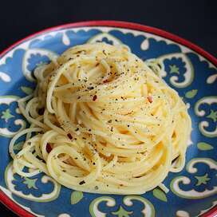

Spaghetti

Spaghetti Cacio e Pepe
This is a Spaghetti recipe that's been made in many families for countless generations.
Beloved by everyone who's had a chance to taste it.
It's a very basic and easy variation on mac 'n cheese. One taste is all you need to fall in love
Ingredients
- 1lb spaghetti
- 6 tablespoons olive oil
- 2 gloves garlic, minced
- 2 teaspoons ground black pepper
- 1-3/4 cups grated Pecorino Romano cheese
Directions
- Bring a large pot of lightly salted water to a boil. Add spaghetti
when water reaches a boil, stirring occasionally until tender yet firm to the bite,
about 10 minutes. Scoop out some of the cooking water and reserve. Drain spaghetti.
- Heat oil in a large skillet over medium heat. Add garlic and pepper;
cook and stir until fragrant, about 1-2 minutes. Add spaghetti and the cheese.
Ladle in 1/2 cup of reserved cooking water; stir until cheese is melted,
about 1 minute. Add more cooking water until sauce coats spaghetti, about 1
more minute. Serve!